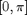

GRDSMOOTH - Smoothed directional derivatives of an image.
Contents
Description
Perform a Gaussian smoothing prior to the image differentiation, following Canny's principles.
Syntax
[gx, gy] = GRDSMOOTH(I);
[gx, gy, mag, or] = GRDSMOOTH(I, sigma, der,...
'Property', propertyvalue, ...);
Inputs
I : input image of size (X,Y,C), possibly multichannel with C>1.
sigma : optional standard deviation of the Gaussian filter used for smoothing of the image; default: sigma=1.
der : optional string setting the method used for (Canny-like) smoothing and differentiating the image; it can be:
- 'matlab' for a direct implementation of the 2D smoothing with IMFILTER and the 2D derivation with GRADIENT,
- 'vista' for the use of 1D convolutions based on the separability of the Gaussian kernel, similar to the computation in EDGE and CANNYEDGES functions (see VISTA_RADIUS function),
- 'fleck' for the CANNY function implemented taking into account the improvements for finite difference suggested in [Fleck92],
- 'fast' for the (fast) implementation proposed by D.Kroon [Kro09], using a 2D Gaussian smoothing with IMGAUSSIAN and Sobel-like directional differentiations with DERIVATIVES,
- 'conv' for the implementation consisting also in direct 2D Gaussian filtering with CONVOLUTION, followed by 2D gradient estimation with GRADIENT,
- 'sob' ('sobel'), 'prew' ('prewitt'), 'circ' or 'opt' for applying the 2D smoothing with IMGAUSSIAN and the derivation using the function GRDMASK [GW02],
- 'tap5' ('derivative5' or kovesi) or 'tap7' ('derivative7') for improved finite differences estimation according to [FS04], using IMGAUSSIAN and GRDMASK as well [KOVESI],
- 'ana' for running the approach based on the convolution with 1D directional Gaussian kernels,
- 'lue' ('luengo') for running an optimized approach based on the analytical forms of the Gaussian filter and its derivative, and the separable property;
default: der='fast'.
Property [propertyname propertyvalues]
'hsize' : optional filter size; default: estimated depending on sigma, typically hsize=6*sigma+1.
'axis' : string indicating the direction/orientation of the output directional derivatives (see below), it is either 'ij' or 'xy'; default: axis='ij' (right-handed coordinate system), ie. the vector orthogonal to the (real) gradient is output: gx is in that case the vertical derivative and gy, the horizontal derivative.
Outputs
gx, gy : directional derivatives with same dimension (X,Y,C), estimated by differentiating the Gaussian filter of the input image; depending on parameter axis (see above), the outputs gx and gy are either:
- the derivatives in I-(vertical oriented NS) and J-(horizontal oriented OE) resp. when axis='ij', or
- the derivatives in X-(horizontal oriented OE) and Y-(vertical oriented SN) directions when axis='xy'.
mag : (optional) magnitude of the gradient.
or : (optional) orientation of the gradient (mapped in ).
References
[Fleck92] M.M. Fleck: "Some defects in finite-difference edge finders", IEEE Trans. Pattern Analysis and Machine Intelligence, 14(3):337-345, 1992.
[GW02] R.C. Gonzales and R.E. Woods: "Digital Image Processing", Prentice Hall, 2002.
[FS04] H. Farid and E. Simoncelli: "Differentiation of discrete multi-dimensional signals", IEEE Trans. Image Processing, 13(4):496-508, 2004.
[Kro09] D.J. Kroon: "Numerical optimization of kernel based image derivatives", University of Twente, 2009. http://www.mathworks.com/matlabcentral/fileexchange/25397-imgaussian
[KOVESI] P.D. Kovesi: "MATLAB and Octave Functions for Computer Vision and Image Processing", The University of Western Australia, available at: http://www.csse.uwa.edu.au/~pk/research/matlabfns/
Remarks
direction/orientation of the outputs of common functions used for gradient estimation:
------> gy [gx,gy] = grdmask(a,'method','axis','ij'); | [gx,gy] = grad(a); gx | [gx,gy] = GRDSMOOTH(a,'der',<any>,'axis','ij'); \|/
------> gx
|
[gx,gy] = gradient(a); gy |
\|/
/|\
[gx,gy] = grdmask(a,'method','axis','xy'); gy |
[gx,gy] = GRDSMOOTH(a,'der',<any>,'axis','xy'); |
------> gx
See C.Luengo discussion on Gaussian filtering and Gaussian derivation: http://www.cb.uu.se/~cris/blog/index.php/archives/22 http://www.cb.uu.se/~cris/blog/index.php/archives/150#more-150
See also
Related: GRDMASK, GSTSMOOTH, SMOOTHFILT, GRADIENT. Called: GRDSMOOTH_BASE.
Function implementation
function [gx,gy,varargout] = grdsmooth(I,varargin)
parsing and checking parameters
error(nargchk(1, 16, nargin, 'struct')); error(nargoutchk(1, 4, nargout, 'struct')); % mandatory parameter if ~isnumeric(I) error('grdsmooth:inputerror','a matrix is required in input'); end p = createParser('GRDSMOOTH'); % create an instance of the inputParser class. % optional parameters p.addOptional('sigma',1., @(x)x>=0); % just for testing p.addOptional('der', 'fast', @(x)ischar(x) && ... any(strcmpi(x,{'matlab','vista','kroon','kovesi','fast','conv','fleck', ... 'opt', 'tap5','tap7','sob','sobel','prew','opt','circ','ana','lue'}))); p.addParamValue('hsize',[], @(x)isscalar(x) || isempty(x)); p.addParamValue('axis','ij',@(x)ischar(x) && any(strcmpi(x,{'ij','xy'}))); % parse and validate all input arguments p.parse(varargin{:}); p = getvarParser(p);
checking variables
% prior checking for external called functions if (strcmp(p.der,'ana') || strcmp(p.der,'vista') || ... strcmp(p.der,'lue')) && p.sigma==0 error('grdsmooth:incompatible',[ p.der ' incompatible with sigma=0']); elseif any(strcmp(p.der,{'kroon','fast'})) && ... (~exist('imgaussian','file') || ~exist('derivatives','file')) error('grdsmooth:unknownfunction','Kroon''s toolbox to be loaded'); elseif any(strcmp(p.der,{'kovesi','tap5','tap7'})) && ... (~exist('derivative5','file') || ~exist('derivative7','file')) error('grdsmooth:unknownfunction','Kovesi''s toolbox to be loaded'); end
main computation
[gx, gy, mag, or] = grdsmooth_base(I, p.sigma, p.der, p.hsize, p.axis); if nargout>=3 varargout{1} = mag; if nargout==4, varargout{2} = or; end; end
display
if p.disp figure, ncols = 2; if nargout>=3, nrows = 2; else nrows = 1; end subplot(nrows,ncols,1), imagesc(rescale(gx,0,1)), axis image off title(['gx - axis ''' p.axis '''']); if size(gx,3)==1, colormap gray, end; subplot(nrows,ncols,2), imagesc(rescale(gy,0,1)), axis image off title(['gy - axis ''' p.axis '''']); if size(gy,3)==1, colormap gray, end; if nargout>=3 subplot(2,2,3), imagesc(rescale(mag,0,1)), axis image off title('mag'); if size(mag,3)==1, colormap gray, end; if nargout==4 subplot(2,2,4), imagesc(rescale(or,0,1)), axis image off title('orient'); if size(or,3)==1, colormap gray, end; end end end
end % end of grdsmooth